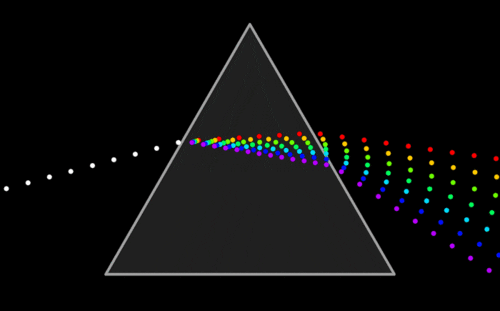

Leandro José da Silva Filho

Contato:
-
Telefone: +55 (81)98516-2203
-
Email: Leandro.filhow00@gmail.com
Formações:
Análise e Desenvolvimento de Sistemas - IFPE
Técnico em Recursos Humanos - ETE
Curso de Programação - Microlins
Experiencias
Redator e Editor do Jornal da escola por 2 anos
Monitor de Física na escola no Ensino Médio por 1 ano e meio (Voluntário)

Participei de dois projetos de Startups que me ensinaram novas Experiencias, além de todo o trabalho em Equipe